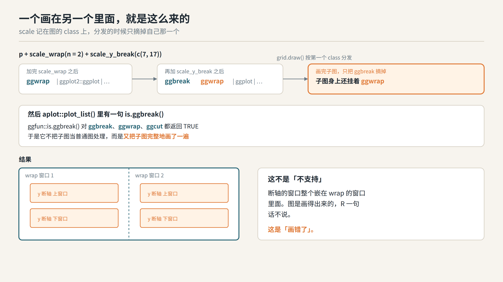
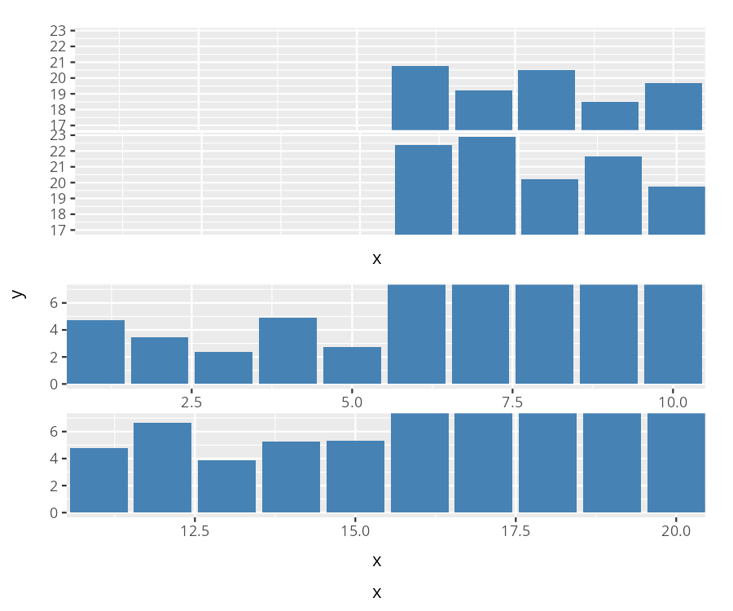
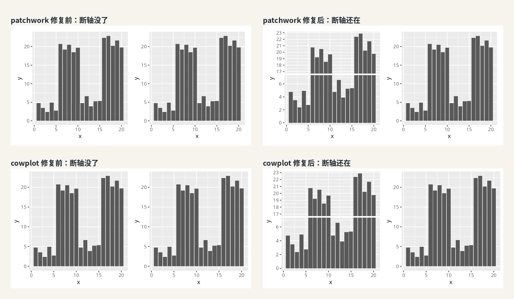
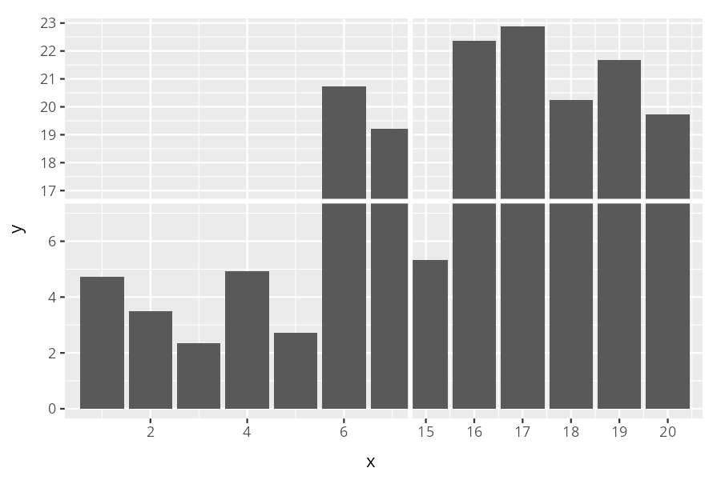
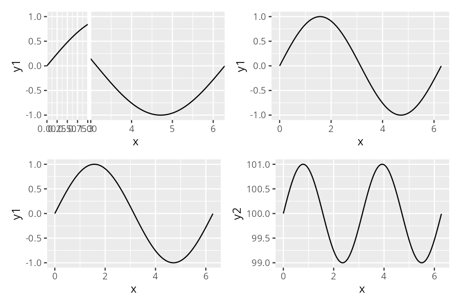
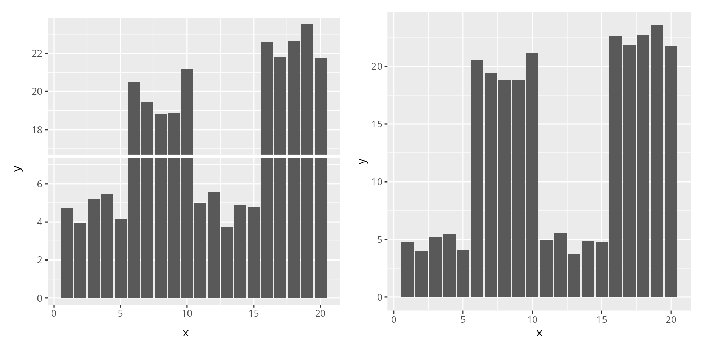

[!一句话版本：ggbreak 的图不是普通的 ggplot 对象，这一个事实同时解释了两件事：两个 scale 一起上会一个嵌在另一个里面，别的拼图包会把断轴静默吃掉。以前它俩都只画错不报错，现在组合非法就在画图前拦住，拼图那条路则从 ggplotGrob() 的根上修好了，套 print() 的土办法可以扔了。]
有人问我：scale_wrap 和 scale_y_break 能不能一起用？不能的话，能不能加这个功能？
我当时的回答是「不支持」。但我没想到的是，不支持的方式有两种，而我给出的那一种是最坏的。
另一件事是个老 issue，2022 年 3 月提的，原话是「断轴图用 patchwork 跟别的图拼在一起，轴就对不齐了」，然后他补了一句「顺带说，如果我用 cowplot 而不是 patchwork 拼，ggbreak::scale_x_break 这一层会消失」。
对不齐和消失，是两个完全不同的问题，而且两个都是真的。这件事挂在我这儿快四年半，我一直知道，只是当时没想清楚该从哪儿下手。
现在想清楚了，这几件事是同一个病。
它不是普通 ggplot
ggbreak 一开始就定了个规矩：截断之后你还能接着加图层。为了这条，我在底层做了一堆转换，代价是它的类不再是单纯的 ggplot 了。
library(ggplot2)
library(ggbreak)
set.seed(2019)
d <- data.frame(x = 1:20,
y = c(rnorm(5)+4, rnorm(5)+20, rnorm(5)+5, rnorm(5)+22))
p <- ggplot(d, aes(x, y)) + geom_col()
class(p + scale_wrap(n = 2) + scale_y_break(c(7, 17)))[1] "ggbreak" "ggwrap" "ggplot2::ggplot" "ggplot"
[5] "ggplot2::gg" "S7_object" "gg"
每个 scale 都是记在图的 class 上的，加一个就多挂一个。而 grid.draw() 按第一个 class 分发，画完只把自己那一个摘掉，子图身上还挂着另一个。
接下来 aplot::plot_list() 里有一句 is.ggbreak()，而 ggfun::is.ggbreak() 对 ggbreak、ggwrap 和 ggcut 都返回 TRUE，于是它不把子图当普通图处理，而是又把子图完整地画了一遍。
一个画在另一个里面，就是这么来的。

症状一：互相嵌套
以前你把两个 scale 加在一起，图是画得出来的，R 一句话不说。
# 0.2.0 之前
p + scale_wrap(n = 2) + scale_y_break(c(7, 17))
你能看到，wrap 切出来的两个窗口里，各自又被 y 的断轴切了一遍，断轴的窗口整个嵌在 wrap 的窗口里面。这不是「不支持」，这是「画错了」。
唯一的提示是控制台里一句 “Coordinate system already present.”。这句话看着像提醒，其实它在说：我这儿已经有一个坐标系了，你新的这个我直接换上去，后果自负。
症状二：被替换掉
我顺手试了一下 scale_x_cut() 加 scale_y_cut()，发现这个比嵌套更糟。
cut 是存成一个属性的，不像 break 有 axis_break_x 和 axis_break_y 分开存，所以第二个 cut 直接把第一个替换掉了。
替换掉的意思是，画出来的图和只切一个轴的图字节级完全相同，而且一个字都不说。你以为你切了两个轴，其实只切了一个。
症状三：吃掉断轴
总有人就是习惯 cowplot::plot_grid()、gridExtra::grid.arrange() 或者 patchwork 的 + 和 /。以前遇到这种，我教过大家一个土办法：在外面套一层 print()。
真相不在 print() 有没有魔法，是这几个包拿图的方式跟 print() 不同：它们不 print，而是走 ggplotGrob()，而 ggplotGrob() 就是 ggplot_gtable(ggplot_build(x))，这两个函数当时都不认识断轴。所以图被当成一个普通的 ggplot 建出来，断轴就没了，一声不吭。
library(patchwork)
library(cowplot)
p_break <- p + scale_y_break(c(7, 17))
p_break + p # patchwork
plot_grid(p_break, p, ncol = 2) # cowplot
上面一行是 patchwork，下面一行是 cowplot。左边是修复前，两张图一模一样，断轴被吃掉了；右边是现在，断轴还在。
包本身没有问题，问题在它拿图的那条路上。
修法一：先拦下来
组合不成立的，现在在画图之前就报错，两个 scale 的名字都点出来，先说的那个是你先写的那个。
Error in `check_scale_combination()`:
! `scale_y_break()` cannot be combined with `scale_wrap()`.
ℹ A plot can be broken on both axes (`scale_x_break()` with
`scale_y_break()`) and one axis can be cut, but a wrapping, breaking
or cutting scale cannot be used together with a different one of them.
cut 那个单独报：
! `scale_x_cut()` cannot be combined with `scale_y_cut()`.
ℹ Only one axis can be cut, and the second cut would replace the first one.
图、ggsave()、ggplotGrob() 三条路都会报，不存在哪条路能绕过去偷偷画出一张错的。
那到底能怎么组合，就两种。
一是两个轴各断一刀，scale_x_break() 配 scale_y_break()，画出来是一个 N×M 的网格；同一个轴上断几刀也是允许的，它们会合并成一个列表，所以 scale_x_break() 写两次没问题。
p + scale_x_break(c(7, 15)) + scale_y_break(c(7, 17))
二是单个 scale 自己用。其他组合，包括两个 cut 一起上，现在全拦下来了。
修法二：从根上修
拼图这条路的修法得从根上来。ggplotGrob() 本身不是泛型，改不了，但它是 ggplot_build() 和 ggplot_gtable() 拼出来的，这两个是泛型。所以现在断轴图在被 build 的时候会给自己打个标记，ggplot_gtable() 认这个标记，直接把整张拼好的图交出去。
g <- ggplotGrob(p_break) # 现在拿到的是拼好的整张图print() 和 ggsave() 那条路我一个字没动，你以前存图是什么样，现在还是什么样。
从 0.2.0 起，那个护身符可以扔了。 当年那个土办法，是让你先把图 print() 一遍再交出去，绕开 ggplotGrob() 这条路；现在它自己认识断轴了，直接拼就行。
对不齐也修了
这个更微妙一点。
patchwork 给一个 layout 里的图对齐，是按 panel 这个格子对的。而断轴图拼出来的那一整张，本身就是一个 panel，问题在于这个 panel 里还装着各个窗口的坐标轴。于是旁边的图被拿去跟一个「已经带着轴标签的 panel」对齐，就比它本该占的位置宽出来一块。
在 6×3 英寸的图上，这一块有 44 像素。
修法是把断轴图自己的轴从 panel 里挪出去，挪到 layout 期待一个轴应该在的那个格子里，同时把图里腾出来的空间留着，所以画出来还是原来的样子。这一改只对 ggplotGrob() 交出去的那张 gtable 生效。
拿提 issue 那位他自己那份代码跑一遍：
x <- seq(0, 2*pi, 0.01)
df <- data.frame(x = x, y1 = sin(x), y2 = sin(x*2) + 100)
plt1 <- ggplot(df, aes(x, y1)) + geom_line()
plt2 <- plt1 + scale_x_break(c(1, 3), expand = FALSE)
plt3 <- ggplot(df, aes(x, y2)) + geom_line()
(plt2 + plt1) / (plt1 + plt3)
四个 panel 的边都对齐了。断轴、cut、wrap 三个 scale 都试过，coord_flip()、双轴断、带 legend、带 facet 也都试过，现在是 0 到 1 个像素。
还是 aplot 省事
断轴图跟 aplot 是完全兼容的，这不是巧合：我没本事让整个社区来适配我的包，只能自己把生态做顺。
library(aplot)
plot_list(p_break, p)
断轴图、普通图，混着拼随便拼，两张断轴图并排放也一样。听我一句，拼图还是 aplot 最省事。但你要是就想用 cowplot 或者 patchwork，现在也可以了。
还说点啥
「不支持」这件事，我一直觉得要分两种。一种是老老实实告诉你不行，另一种是装作行，然后画一个错的给你。
第二种麻烦得多，因为用户不会去怀疑图，只会怀疑自己。
拼图那个 issue 挂到我这儿快四年半，scale 组合这个是最近有人问起来才发现的。卡住我的从来不是写不出来，是我一直没把它们看成同一个问题：scale 撞车是 class 分发只摘一个，拼图吃图是 ggplotGrob() 不认识断轴，看着八竿子打不着，根子上都是「这张图不是普通 ggplot」这一句话。把那个入口修好，两条路一起通。
顺手把 vignette 和帮助文档也补了，哪几个 scale 能组合、为什么，都写清楚了。以后再往 ggbreak 里加 scale，先看一眼那个名单。